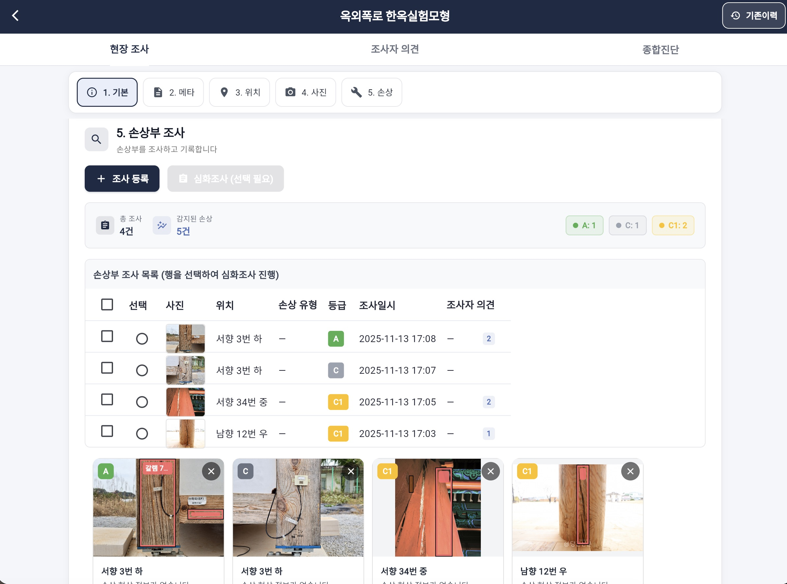
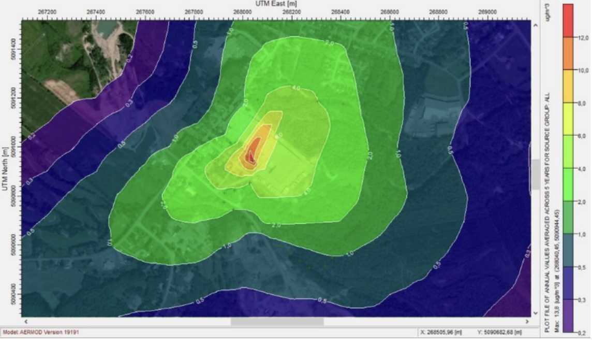
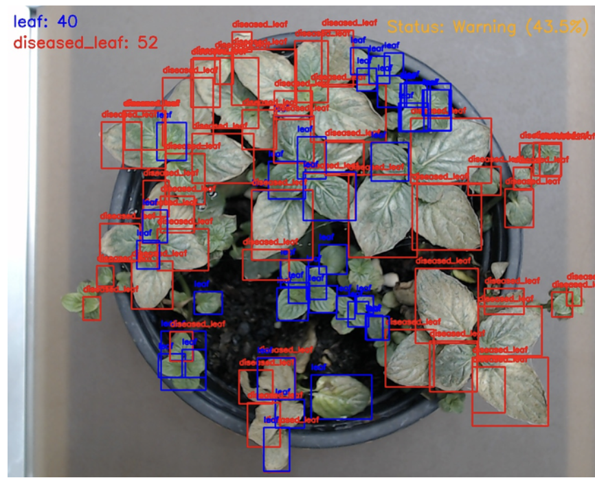

선정 프로젝트

풀스택 개발 & AI
국가유산 모니터링·조사·등록 시스템
국가유산청 Open API, AI 손상 탐지, Firebase 실시간 동기화를 통합한 크로스플랫폼 현장 조사 시스템. Flutter(Web/Android/iOS) 기반 프론트엔드와 FastAPI 백엔드, PyTorch 손상 탐지 모델, Firebase 실시간 데이터베이스를 하나의 워크플로우로 통합하여 구축하였다.
2024-2025, 문화재 디지털 전환 프로젝트
더 보기 >

IoT & 임베디드 시스템
WaggleNet – LoRa 및 MQTT 기반 내부·외부 벌통 환경 모니터링 시스템
이 프로젝트는 양봉 환경에서 내부와 외부 조건을 동시에 모니터링하는 저비용·확장형 IoT 시스템을 구축하기 위해 진행되었다. Purdue University에서 2025년 여름, 국제 연구 장학생으로 참여하여 스마트 양봉(Smart Beekeeping) 분야의 IoT 기반 환경 감시 시스템을 설계하고 구현하였다.
2025년 여름, IITP Korean AI Square, Purdue University
더 보기 >

AI & 데이터 분석
AI 기반 공장 및 발전소 배출가스의 도시 대기 영향 분석 시스템 (GAIA Project)
이 프로젝트는 발전소와 공장에서 배출되는 대기오염 물질이 도시 대기질에 미치는 영향을 인공지능으로 분석하기 위해 수행한 캡스톤디자인 연구이다. 국가 대기오염 관측망(TMS)에서 수집된 7년간(2018–2024)의 시계열 데이터를 기반으로, AERMOD 물리 확산 모델과 Transformer 기반 딥러닝 모델을 융합한 하이브리드 예측 시스템을 구축하였다.
2025년 1학기, 캡스톤 디자인 경진대회, 전북대학교
더 보기 >

AI & 컴퓨터 비전
작물 품질 상태 판별: 이미지 프로세싱 및 인공지능 기술 (Guardians of Farm Project)
이 프로젝트는 스마트팜 환경에서 작물의 생육 상태와 질병 여부를 효율적으로 판별하기 위해 개발한 인공지능 기반 품질 분석 시스템이다. GroundingDINO–SAM 비지도 탐지에서 YOLOv8 지도 모델로의 전환 과정을 통해 AI 식물 품질 판별의 실용성을 입증했다.
2024년 2학기, 캡스톤 디자인 경진대회, 전북대학교
더 보기 >